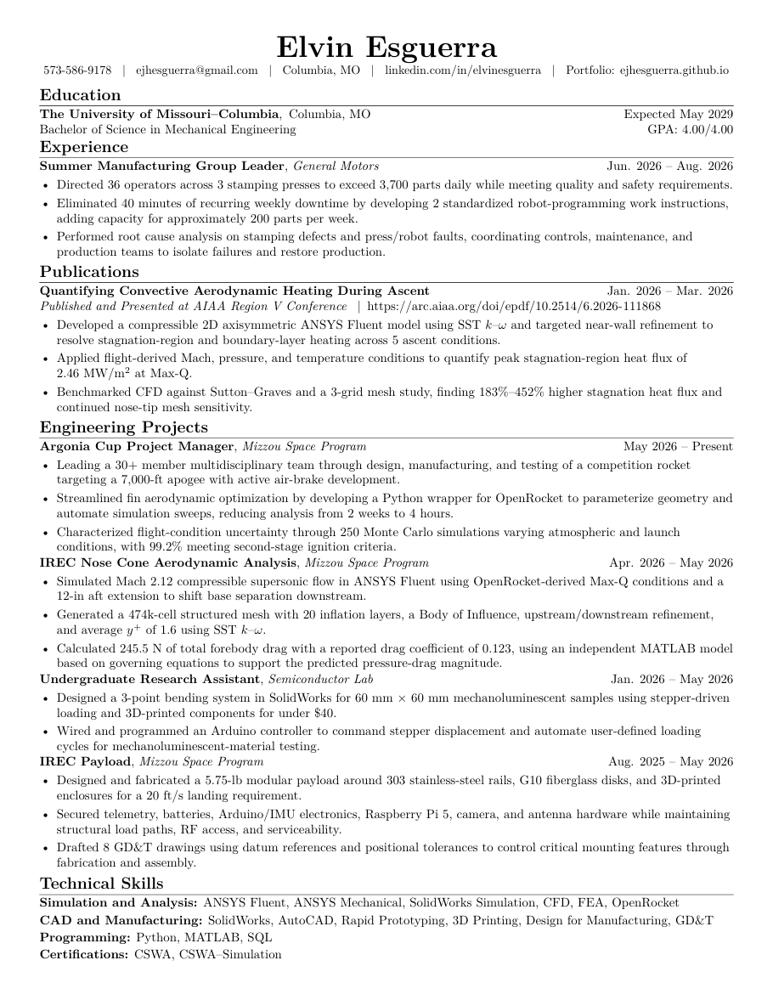

Elvin Esguerra
Sophomore Mechanical Engineering student at Mizzou interested in thermal engineering, computational methods, mechanical design, aerodynamics, structures, and artificial intelligence.

I enjoy taking a problem, figuring out how it works, and then asking how I can make it faster, simpler, or better. That mindset is a big part of what draws me to engineering and why I enjoy everything from simulation and mechanical design to hands-on projects. Outside of academics, I’m into tennis, playing with my dogs, and my favorite food is pho.
Resume
Mechanical Engineering student focused on simulation, analysis, manufacturing, and multidisciplinary engineering projects.

Engineering & Work
A selection of engineering projects, research, and professional experience focused on simulation, design, manufacturing, optimization, and experimentation.
Internship Experience
Research
Engineering Projects
Meet My Dogs
The four members of the household who have absolutely no interest in CFD convergence.

Cosmo

Pluto

Winston